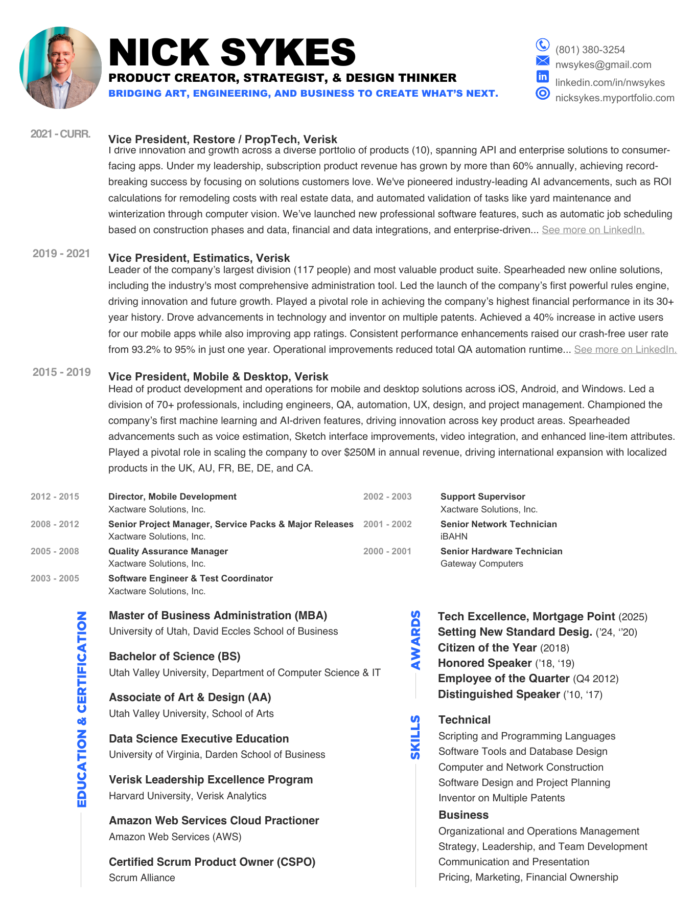

Nick Sykes
Portfolio
2006—2026
Product creator · Strategist · Design thinker
Bold ideas.Clear direction.Real results.
Product strategyApplied AIEnterprise platformsCustomer researchDesignCreative direction
Video Showcase
Product narratives, field research, training, launches, and demonstrations.
01Frontline ObsessionCustomer research / Film→


Products & experiments
Enterprise products, applied AI, creative practice, and unconventional side projects.
01Sunday SketchesIllustration / Personal↗


Experience & practice
Product creator,
strategist, and
design thinker.
I bridge art, engineering, and business to lead product portfolios, build customer-loved software, and create what’s next.
10 product portfolio
60%+ annual subscription growth
117 person organization
- Current
- Vice President, Restore / PropTech · Verisk · 2021—Present
- Focus
- Product leadership · Applied AI · Enterprise systems
- Education
- MBA · University of Utah Data Science Executive Education · UVA Darden BS Computer Science + AA Art & Design · Utah Valley University Full education ↗
- Connect
- LinkedIn ↗ · Instagram ↗ · X ↗

Ideas worth protecting.
Inventions spanning computer vision, machine learning, generative AI, scheduling, and platform integration.
0163977527Generative Artificial Intelligence Systems and Methods for Prompt-Driven Construction EstimatesAI Estimator↗
02US12314635B2Systems and Methods for Rapidly Developing Annotated Computer Models of StructuresAppendages: SketchAR/LiDAR↗
03US12229807B2Computer Vision Systems and Methods for Automatically Detecting, Classifying, and Pricing Objects Captured in Images or VideosObject Recognition ML/AI↗
04WO2025160350A1Machine Learning Systems and Methods for Automated Construction Scheduling and Cost EstimationScheduling, ALE↗
05US20240202631A1Machine Learning Systems and Methods for Validating WorkflowsWork Validation ML/AI↗
06WO2023192366A1Systems and Methods for Data Transfer and Platform Integration Using QR CodesIntegration via QR↗
07US20230136956A1Machine Learning System and Methods for Price Determination from Free Text DataAmazon & Contents Integration ML/AI↗